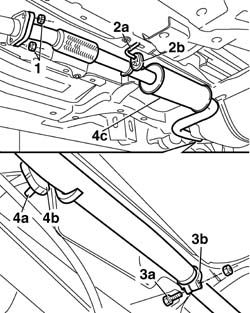

1076B26 intermediate exhaust silencer - r+r emission control versions
- Path
- Procedures > 10 ENGINE > 1076 EXHAUST PIPES AND SILENCERS > 1076B EXHAUST PIPES AND SILENCERS > 1076B26 intermediate exhaust silencer - r+r emission control versions
- Kind
- repair procedure (removal / refitting; the operation number is the code)
- Applies to
- all engines; all production periods
- Interactive page
- https://sloeber94.github.io/elrnDB-fDbl/en/#/2584366
Applies to: all engines; all production periods
 Removing
Removing
 Refitting
RefittingPlace the car on a lift.
1. Undo the nuts securing the intermediate exhaust silencer to the catalytic converter.
2. Undo pin (2a) from the rubber block on body (2b).
3. Unscrew retaining bolt (3a) securing the band (3b) joining the intermediate silencer and rear silencer.
4. Undo pin (4a) from the rubber block on body (4b), then remove intermediate exhaust silencer (4c).

Applies to: all engines; all production periods
Refitting
RemovingJoin the rear silencer to the intermediate exhaust pipe using the metal band.
Tighten the bolt fixing the metal band.
 | Fastening | Component | Ø | Value (daNm) |
|---|---|---|---|---|
- | Nut | REAR EXHAUST SILENCER | M10 x 1.25 | 3 |
Fit the barings for the silencer in the special rubber mountings.
Tighten the bolts securing the intermediate exhaust silencer to the catalytic converter.
| Fastening | Component | Ø | Value (daNm) |
|---|---|---|---|---|
- | Nut | INTERMEDIATE EXHAUST SILENCER | M8 | (Flange joint to catalytic converter) 3 |
Remove the vehicle from the ramp.